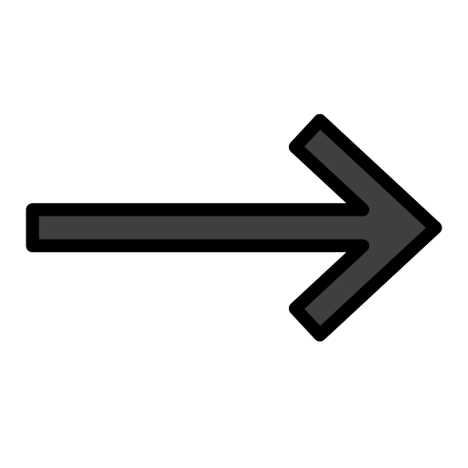
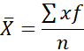
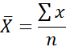
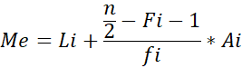
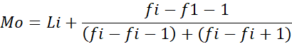

|
UNA CONVIVENCIA ARMÓNICA TRAE CONSIGO COSAS BUENAS, Y ES ALGO QUE TODOS PODEMOS TENER | |
|
AULA VIRTUAL DE MATEMÁTICAS |

MEDIDAS DE TENDENCIA CENTRAL |
||
¿Qué son las Medidas de Tendencia Central? |
||
Son medidas estadísticas que pretenden resumir en un solo valor a un conjunto de valores. Representan un centro en torno al cual se encuentra ubicado el conjunto de los datos.
|
||
| Media Aritmética |
||
¿No sabes lo que es? |
 | Es el conjunto de un número determindado de datos que al ser sumados y divididos para la cantidad de datos nos dará un resultado, el cual es más conocido como promedio |
A continuación mostraremos las formulas para hallar la media |
||
| Para datos agrupados |  |
|
| Para datos no agrupados |  |
Mediana |
||
| ¿Quieres saber su definición? | Es el número que se encuentra en la mitad de un número de datos ordenados, si el número de datos es par, la mediana será el promedio de los 2 números del centro | |
| Formulas para hallar la mediana | |||
| Para datos agrupados en intervalos |  |
||
| Para datos agrupados puntualmente |
|
Tenemos que buscar el valor en "Fi" y si no está, buscamos el mayor más cercano | |

| Moda |
||
Si no conoces lo que es, ahi te lo escribimos |
Es el valor que aparece en myor cantidad en un número de datos | |
| Fórmulas para hallar la moda | ||
| Para datos agrupado en intervalos |  |
|
| Existen varios tipos según sus datos en: | ||
Datos agrupados: Si se encuentran ordenados en una tabla estadística |
||
| A la vez se derivan 2 tipos, datos agrupados en intervalos y datos agrupados puntualmente | ||
Aquí podemos ver un ejemplo de cada una |
|||||||||||||||||||||||||||||||||||||||||||
|
|
||||||||||||||||||||||||||||||||||||||||||
| Ejemplo resuelto con datos agrupados en intervalos | Ejemplo resuelto con datos agrupados puntualmente | ||||||||||||||||||||||||||||||||||||||||||
| Datos sin agrupar: Son cuando no se encuentran ordenados en una tabla | ||
| Un ejemplo simple sería | ||
| En un exámen los estudiantes 20 del 2do BT tuvieron las calificaciones de 10, 9, 8, 5, 7, 3, 8, 01, 4, 10, 8, 8, 2, 10, 9, 7, 3, 6, 8, 2. Calcule la media aritmética | ||
Ejemplo resuelto con datos sin agrupar
|
||
| ¿Cómo podemos aplicar las Medidas de Tendencia Central en la vida cotidiana? | ||
|
||
Si ya terminaste de leer toda la información te invitamos a que realizes este juego educativo para probar tus conocimientos
|
||
|
|
|
Autores: Angel Pastaz, Melany Guaytarilla, Juan Mejía, Damaris Tulcanaza 2020 - 2021 2do Bachillerato Técnico Informático Unidad Educativa Municipal Técnica y en Ciencias "San Francisco de Quito" |
|